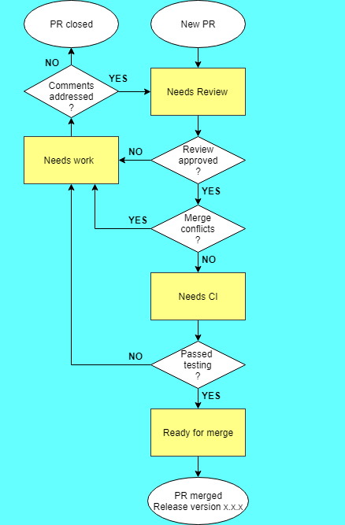

GitHub pull requests workflow
Each pull request goes through the following workflow:
Pull request workflow
Pull request states
Mergify bot drives our workflow. Its settings are defined in the file mergify.yml. The Mbed OS maintainers are responsible for moving pull requests through the workflow states with help from the mergify bot.
Each state is time-boxed. In most cases, sufficient time is provided to move to another state. The ciarmcom bot periodically checks that pending activities on pull requests are completed in a timely manner.
| State | Limit (days) |
|---|---|
| needs: work | 10 |
| needs: review | 3 |
| needs: CI | 1 |
| ready for merge | 1 |
If the pull request is idle in a state for longer than the allowed time, our bot will add the 'stale' label alongside a comment nudging the user or reviewer to carry out any necessary work. This label will only be removed when the action required to move the pull request forward is completed.
Pull requests are closed if they are idle for more than two weeks. The author or the maintainer can reopen it at any time.
Reviews
All pull requests must be reviewed. The Arm Mbed CI bot determines the most suitable person to review the pull request (based on the files changed) and tags that person accordingly. A PR creator can request specific reviewers by @ tagging people or teams in the Reviewers section of the pull request template. For example, @personA @TeamB.
Mergify dismisses a reviewer's status after any change to the pull request commit history (such as adding a new commit or rebasing). As mentioned above, it is important that you not force push to your branch when your PR is undergoing review. This is discouraged because it may cause the reviewers comment history to be lost, and have other unintended effects. Smaller changes, such as documentation edits or rebases on top of latest master, only require additional review by maintainers. Their approval is sufficient because a team assigned as a reviewer already approved the pull request.
- Label:
needs: review. - Time: Three days for reviewers to leave feedback after the auto-reviewer bot has added the label.
The Continuous Integration (CI) testing
There are many CI systems available for testing Mbed OS pull requests and branches. Which CI tests we run against a particular pull request depends on the effect that it has on the code base. Irrespective of which CI tests run, Mbed OS has an all-green policy, meaning that all triggered CI jobs must pass before we merge the pull request.
- Label:
needs: CI. - Time: One day for CI to complete and report back results.
Work needed
A pull request in the "work needed" state requires additional work due to failed tests, or rework as a result of the review. If a pull request is in this state, our maintainers request changes from the pull request author.
- Label:
needs: work. - Time: Three days for the pull request author to action the review comments.
Ready for integration
A pull request is ready for merge after all the reviews and tests are complete.
Maintainers merge pull requests because they have write access to the main master branch. Pull request integration happens at any time of the day. This may be automated in the future.
- Label:
Ready for merge. - Time: One day.
Releases
When we merge a pull request that we will publish in a patch release, we tag it with the specific patch release version. This is the release in which we first publish this pull request. For patch releases, we allow only bug fixes, new targets and enhancements to existing functionality. New features are typically published in feature releases.
The release tag has the format:
release-version: m.f.p
Where:
mis the major release.fis the feature release.pis the patch release.
We may add additional suffixes, which could represent a release candidate, alpha or beta release or so on.
Additional labels
We use many other labels to summarize the scope and effect of the changes:
- needs: preceding PR - Cannot yet be merged because it has a dependency on another pull request that needs to merge first.
- needs: architectural review - A major pull request or feature update that changes the architecture, and requires review from internal teams.
- do not merge - Contains changes that may be in a draft state and submitted purely for review, or may contain breaking changes that have not been considered.
- devices: 'name' - Specifically affects the named device(s).
- component: 'name' - Specifically affects the named component. Component names follow the structure of Mbed OS (for example
ble,storage,tls). - Release review required - Additional release version approval is required.
- release version missing - A merged pull request does not contain a release label; the maintainers team should fix this.
- BREAKING-CHANGE - This pull request introduces a breaking change.
- mirrored - The git2jira bot mirrored an issue to our internal Jira.
- JIRA status: - An internal Jira ticket status propagated to Github issues. It can be: OPEN, IN PROGRESS, CLOSED, RESOLVED or REOPENED.
- closed in jira - Mirrored internal Jira issue was closed.
- Manually patch - A pull request needs manual cherry-picking for the release candidate to resolve conflicts.
- risk: x - The pull request risk level. Options are green, amber or red.
- open for community contributions - Arm does not intend to fix this issue in the near future.
- mirror internally - This pull request will be manually mirrored to our internal Jira.
The following labels summarize the scope of the pull request:
- scope: bug-fix.
- scope: feature.
- scope: new-target.
- scope: refactor.
Documentation contribution labels
The documentation repository uses some of the same labels that the mbed-os repository does. In addition, it includes:
- code dependency - The feature or change this pull request describes has not yet merged into
masterinmbed-os. Even if all the required reviewers have reviewed and approved this pull request, it must wait to merge until its code does. - wait to merge - This pull request is a work in progress and is not yet ready for full review.
- Scripting work - not for writers - This issue requires a change too large or frequent for us to do manually. Instead, a script needs to be created to fix this issue.
- help wanted - The documentation team does not know how to answer this question and welcomes help in answering it.
Deprecated repositories
If repository contains the following note in Readme.md, it was archived (read-only). The repository is no longer maintained.
## Deprecation note!
**Please note: This repository is deprecated and it is no longer actively maintained**.
To deprecate a repository, please do:
- Add deprecation note to Readme.md in the repository.
- Add "DEPRECATED:" to "About" section (it is useful in Github search).
- Set repository to read only (Github archive option).
- Update references in our CI or documentation (deprecation notice or updated references to available replacement).